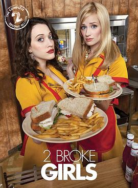

破产姐妹 第二季 / 2 Broke Girls Season 2
又名：打工姐妹花 第二季 / 追梦女孩 第二季 / 破产女孩 第二季 / 都市女孩 第二季 / 吐槽姐妹 第二季
啊哈哈消化午饭的剧集
作品信息
| 导演 | 弗莱德·萨维奇 |
| 编剧 | 迈克尔·帕特里克·金 / Michelle Nader / Jhoni Marchinko |
| 主演 | 凯特·戴琳斯 / 贝丝·比厄 / Garrett Morris / 马修·摩伊 / Jonathan Kite / 詹妮佛·库里奇 / 瑞恩·汉森 / 斯蒂文·韦伯 / 乔纳森·克特 / 加勒特·莫里斯 / 尼克·扎诺 |
| 类型 | 喜剧 |
| 制片国家/地区 | 美国 |
| 语言 | 英语 |
| 首播 | 2012-09-24(美国) |
| 季数 | 2 |
| 集数 | 24 |
| 单集片长 | 22分钟 |
| IMDb | tt2305069 |
最后一次看到是 2026-08-12T21:13:00+08:00 · 豆瓣原页